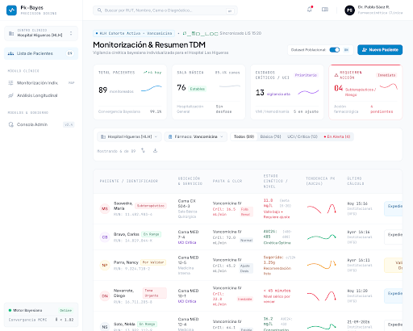
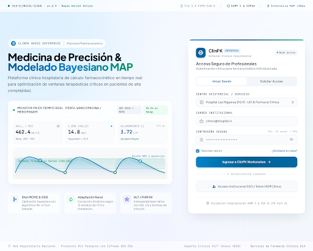
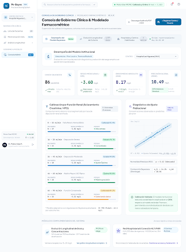

Disponible
V
Vancomicina
Modelos de uno y dos compartimentos, seguimiento de función renal cambiante y apoyo para terapias de reemplazo renal.
Conocer el alcance →Plataforma clínica hospitalaria (CDSS) para el ajuste dinámico e individualizado de vancomicina, aminoglucósidos y fármacos de estrecho margen terapéutico. Maximiza la eficacia clínica y previene la nefrotoxicidad en pacientes críticos.
El aclaramiento individual (1.22 L/h) supera el poblacional en un +27%. El esquema propuesto alcanza la meta de AUC₂₄ (592 mg·h/L) en rango seguro sin nefrotoxicidad.
Modelo adaptado con datos de 86 pacientes locales de idéntico rango renal (VFG 16-25 mL/min).
El uso de tablas estáticas o ecuaciones genéricas genera un 40% de niveles subterapéuticos o toxicidad renal en pacientes complejos.
Combina los modelos poblacionales canónicos con la farmacocinética única del paciente y las concentraciones plasmáticas reales, actualizando instantáneamente el aclaramiento (CL) y volumen de distribución (Vd).
El sistema aprende de los pacientes propios de su hospital, refinando las covariables de fallo renal agudo, shock séptico o hemodiálisis. El prior local se enriquece con cada caso validado por el comité de farmacia.
Monitoreo target AUC₂₄ / MIC (400-600 mg·h/L según guías consensuadas IDSA/ASHP) garantizando concentración bactericida con mínimo riesgo de lesión renal aguda (IRA).
Prueba cómo interactúa el algoritmo cambiando dosis e intervalos para alcanzar la diana terapéutica recomendada en un paciente crítico simulado.
Cinco módulos interconectados que cubren todo el ciclo de monitorización terapéutica de fármacos (TDM).
Panel ejecutivo de pacientes hospitalizados en camas críticas y básicas. Alertas inmediatas por concentraciones subterapéuticas o riesgo de toxicidad.

Registro cronológico exacto de dosis administradas, tiempos de perfusión y concentraciones séricas medidas con validación cruzada de laboratorio.

Ajuste prospectivo e interactivo de dosis (mg) e intervalo (τ) para predecir concentraciones séricas en estado estacionario y AUC₂₄.

Correlación temporal entre dosis acumuladas y respuesta de niveles plasmáticos a lo largo de días de tratamiento con análisis de dispersión global.

Auditoría de sesgo medio (Bias/MPE), MAE y RMSE por estratos de función renal para garantizar que el modelo local supera consistentemente a la literatura.

Generación instantánea de reporte PDF de grado hospitalario con firma digital, parámetros farmacocinéticos, gráfico de curva C(t) y justificación del ajuste.

PK-Bayes ha sido evaluado en cohortes hospitalarias reales de pacientes en Unidad de Cuidados Intensivos y medicina interna con disfunción orgánica múltiple.
Frente al 53% alcanzado con métodos tradicionales de ajuste por fórmulas estándar.
Control estricto de picos y prevención del sobrealcance de AUC₂₄ > 650 mg·h/L.
La optimización bayesiana MAP permite individualizar con sólo 1 ó 2 muestras de valle.
Modelos de uno y dos compartimentos, seguimiento de función renal cambiante y apoyo para terapias de reemplazo renal.
Conocer el alcance →Evaluación de eliminación no lineal y corrección de niveles cuando la albúmina o la función renal alteran su interpretación.
Conocer el alcance →Registros electrónicos auditables y trazabilidad criptográfica.
Software de soporte a decisión clínica rigurosamente validado.
Interoperabilidad nativa con EPIC, Cerner, TrakCare y LIS.
Encriptación TLS 1.3, RLS PostgreSQL y anonimización de datos.
Agende una sesión técnica con nuestros especialistas en farmacometría clínica para evaluar la calibración del modelo en su cohorte y la integración con su HIS/LIS.